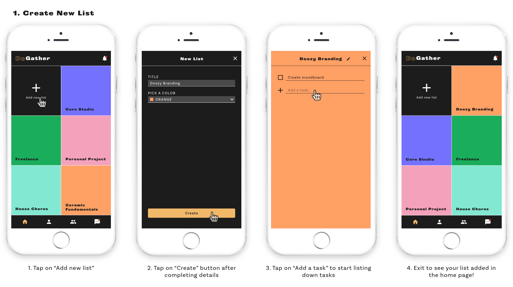
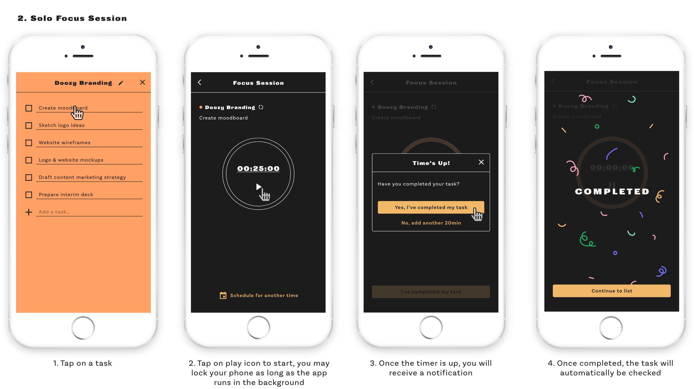
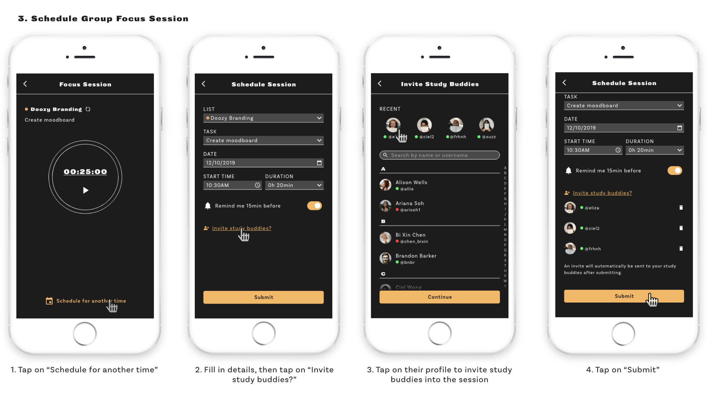
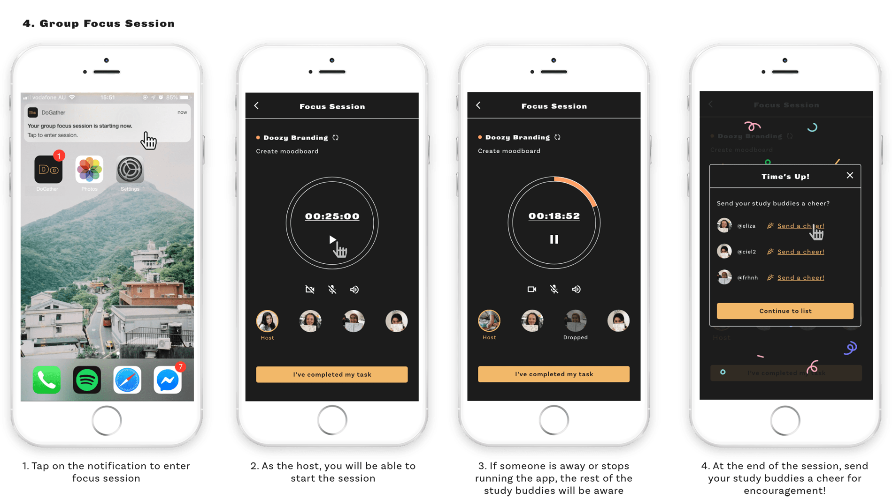
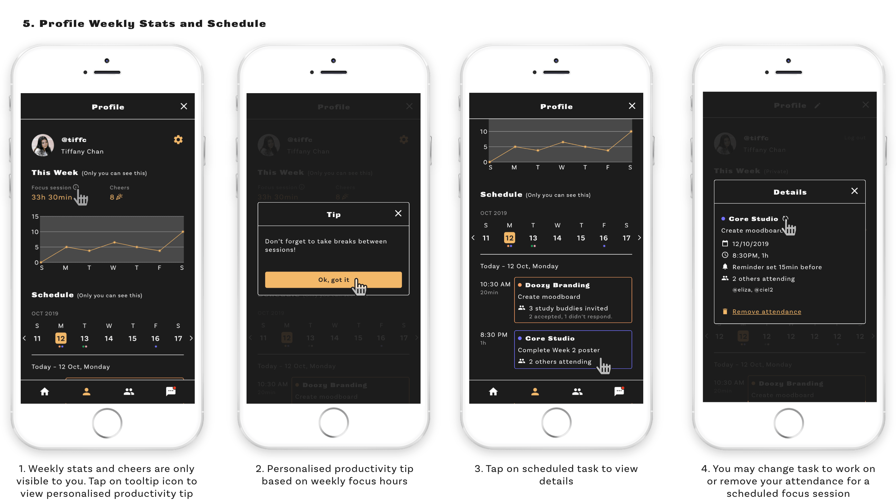

Towards the end of a school term or semester, you‘ll see students churning out last minute work to meet assignment deadlines or cramming information the night before an exam. The objective of this project is to understand students' study behaviour and design a tool that can help students avoid last minute work. The process follows a double diamond approach, incorporating the stages of Discover, Define, Design, and Deliver.
I interviewed 10 university students to understand their study habits, challenges, and motivations.
“If you’re about to dive into a piece of work that requires intense mental focus, you might find it helps to sit next to someone else who is concentrating hard.” – The British Psychological Society
While doing secondary research, I learnt about a community of students who own/follow social media accounts posting content about studying – from productivity tips to stationery recommendations.
There is a part of the online study community that I was particularly intrigued by; some of the accounts host virtual “study sessions” where they either live stream or film themselves studying in real time while an online audience watch and study together with them. After watching a couple videos, I decided to reach out to some of these content creators on Instagram, to ask why they do it.
With the results and insights of the initial research in mind, I began brainstorming for app feature ideas and placed them in a MoSCoW matrix. I sketched rough wireframes to get a sense of how it could work, then validated the flow with some of students.
The solution is a task management app that allows university students to host virtual group study sessions and become more productive, together. (click here for the interactive prototype
This was my ✨first ever✨ UI/UX project that I did and I'm really proud of the concept of this app. I also did a lot of self-learning through the internet, where I got introduced to various UX methodologies and processes.
In retrospect, here are some things I would've done differently: